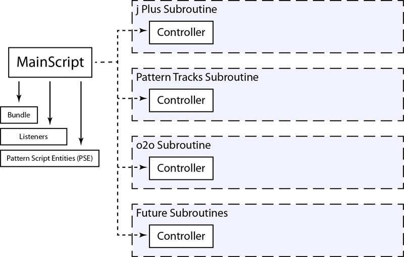
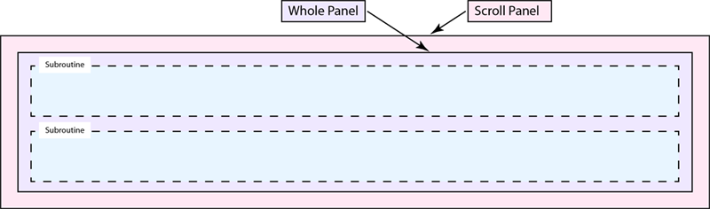
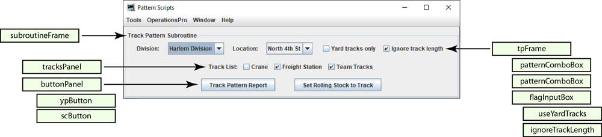
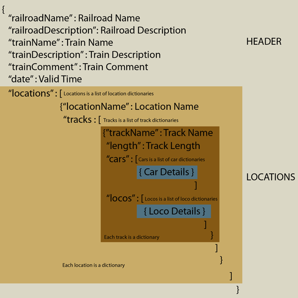

The Pattern Scripts plugin for JMRI is a suite of subroutines for JMRI Operations Pro. The use of this plugin is documented in the following list of videos. The videos are recorded in the English language.
Overview of this plugin
How to add this plugin to JMRI
The j Plus Subroutine
Track Pattern Subroutine - Demonstration at a yard
Track Pattern Subroutine - Demonstration at industry
o2o, the ops to ops subroutine for TrainPlayer©
The Pattern Scripts plugin can be thought of as a framework for hosting subroutines for JMRI Operations Pro that require a user interface. This plugin comes with three subroutines; j Plus, Pattern Tracks, and o2o. A template is also included to serve as scaffolding for someone wishing to add their own subroutine. Although the subroutines are somewhat interdependent, they may be activated or deactivated individually as needed.
The following chart shows the code structure of this plugin.
">OperationsPatternScripts.MainScript.View.makePatternScriptsWindow()
">Each JMRI profile gets its own configuration file, which is named PatternConfig.json.
It is found in the operations folder, and is used to provide custom settings for each profile and record user inputs.
The description of each element is in blue
User editable keys are described in green
Select Tools/Edit Config File.
If a mistake is made editing the PatternConfig.json file, the plugin will delete the file and provide a new one to start over with.
Worst case the plugin may crash. If
"CP" : { Control Panel
"TS" : { Translation Services
"UD" : "UseDeepL",
"UX" : "UseSomethingElse"
},
"TC" : "UD", Translation Choice
"LN" : "", Layout Name from JMRI Settings
"DR" : true, Reserved
"AP" : true, Add button to Panel Pro frame, plugin is not displayed but still enabled
"SE" : "utf-8", Default encoding
"IL" : [ Include list, subroutines are included in this order
"jPlusSubroutine",
"PatternTracksSubroutine",
"o2oSubroutine"
],
"jPlusSubroutine" : false, Activation status
"PatternTracksSubroutine" : true, Activation status
"o2oSubroutine" : false, Activation status
"PH" : 280, Default panel height
"PW" : 1100, Default panel width
"PX" : 0, Plugin X location
"PY" : 0, Plugin Y location
"OC" : true, Open System Console Window on starting plugin
"RV" : 20221122 Revision control
},
"CD": { Color Definitions
"CP": { Color Palette
"BLANCH": { Any of these colors can be changed
"A": 255, Alpha value
"B": 225, Blue value
"D": Light grey, Vague Description
"G": 225, Green value
"R": 225 Red value
},
"DUST": {
"A": 255,
"B": 218,
"D": "Light tan",
"G": 242,
"R": 252
},
"FADED": {
"A": 255,
"B": 245,
"D": "Light purple",
"G": 225,
"R": 237
},
"LICHEN": {
"A": 255,
"B": 244,
"D": "Light green",
"G": 255,
"R": 236
},
"PALE": {
"A": 255,
"B": 250,
"D": "Light blue",
"G": 243,
"R": 237
},
"PETAL": {
"A": 255,
"B": 224,
"D": "Light red",
"G": 208,
"R": 240
},
"locoColor": "FADED", Specify no color with ""
"carColor": "DUST",
"alertColor": "PETAL"
},
"TO" : { Tweek Operations, adjustments to operations settings
"SME" : true, setMainMenuEnabled
"CWS" : true, setCloseWindowOnSaveEnabled
"SBA" : true, setBuildAggressive
"SIA" : true, setStagingTrackImmediatelyAvail
"SCT" : "ARR Codes", setCarTypes
"TNB" : true, setStagingTryNormalBuildEnabled
"SME" : true, setManifestEditorEnabled
"PUC" : "Road", "Number", "Type", "Load Type", "Load", "Destination", setPickupManifestMessageFormat
"SOC" : "Road", "Number", "Type", "Load Type", "Load", "Destination", setDropManifestMessageFormat
"MC" : "Road", "Number", "Type", "Load Type", "Load", "Final Dest", setLocalManifestMessageFormat
"PUL" : "Road", "Number", "Model", "Consist", "Destination", setPickupEngineMessageFormat
"SOL" : "Road", "Number", "Model", "Consist", "Destination", setDropEngineMessageFormat
},
"SM" : { Staging modifiers
"SCL" : true, setAddCustomLoadsAnySpurEnabled
"RCL" : true, setRemoveCustomLoadsEnabled
"LEE" : true, setLoadEmptyEnabled
},
The j Plus subroutine adds enhanced railroad detail to reports generated by both JMRI and this plugin.
Data for this subroutine is entered into the text boxes or if the TrainPlayer subroutine is activated, the additional railroad detail is imported from the TrainPlayer layout.
Not all fields need be entered.
The enhanced fields are as follows:
This is railroad that owns or operates the tracks being modeled. Any name can be entered such as 'PRR' or 'BN UPRR Joint' or 'G&D'.
This is the railroad's name for the part being modeled, such as 'Long Beach Intermodal Terminal' or 'Salem Glass Works Branch'.
Where the the railroad is located, such as 'The Great Divide' or 'The Bronx, New York'.
Which year the model railroad is based on, this is a mirror of 'JMRI/OperationsPro/Settings/Year Modeled'.
OperationsPatternScripts.jPlusSubroutine.Controller.makeSubroutinePanel()

"JP" :{ j Plus Details.
"OR" : "", Operating railroad, the one that owns the tracks.
"TR" : "", Territory. Name of the particular operation being modeled.
"LO" : "", Location of the prototype.
"YR" : "", Calendar year being modeled.
"SC" : "", Model railroad scale, from settings or TrainPlayer.
"LN" : "", Layout name, from settings or TrainPlayer.
"BD" : "", Build date from TrainPlayer.
},
The Track Pattern subroutine can generate pattern reports for tracks at a single location. Additionally, cars can be moved from track to track within a location, and optionally, if a car is moved onto a spur, the schedule for that spur can be applied.
OperationsPatternScripts.PatternTracksSubroutine.Controller.makeSubroutinePanel()
">OperationsPatternScripts.ControllerSetCarsForm.CreatePatternReportGui.makeFrame()

The pattern reports and TrainPlayer© exports all start with the creation of a JSON file. The file is created by this plugin and in the case of TrainPlayer© manifest exports the JSON is created by modifying the JMRI generated manifest JSON. All the JSON files are written to the jsonManifests folder. They follow the illustrated format:
">
"PT" : { Pattern Tracks
"AD" : [ All Divisions (written by this plugin)
],
"AL" : [ All Locations (written by this plugin)
],
"PL" : "", Pattern Location (written by this plugin)
"PT" : { Pattern-Tracks (written by this plugin)
},
"PA" : false, Yard Tracks Only flag (set by user, written by this plugin)
"PI" : false, Ignore Track Length flag (set by user, written by this plugin)
"AS" : true, Apply Schedule flag (set by user, written by this plugin)
"TI" : false, TrainPlayer Include flag (set by user, written by this plugin)
"PW" : 260, Pattern Width
"PH" : 16, Pattern Height
"RM": 8, Row Multiplier
"RM" : { Report Modifiers
"DS" : "*No Waybill", Destination designator
"DT" : "*Not Consigned", Destination Track designator
"FD" : "*Via Staging", Final Destination designator
"FT" : "*Any Line", Final destination Track designator
"SL": [ Sort Locomotives
"Model"
],
"SC": [ Sort Cars
"Load Type",
"FD&Track"
],
"AW": { Attribute Width
"Input": 6,
"Model": 5,
"Road" : 5,
"Number" : 7,
"Type" : 6,
"Length" : 7,
"Weight" : 7,
"Load" : 6,
"Load Type" : 5,
"Loco Type" : 18,
"Owner" : 20,
"Consist" : 8,
"Hazardous" : 10,
"Color" : 6,
"Kernel" : 7,
"Kernel Size" : 12,
"Owner" : 6,
"Track" : 6,
"Location" : 9,
"Destination" : 15,
"Dest&Track" : 30,
"Final Dest" : 11,
"FD&Track" : 21,
"Comment" : 15,
"SetOut Msg" : 12,
"PickUp Msg" : 12,
"RWE" : 10,
" " : 0
}
},
The ops to ops (o2o) subroutine is a group of utilities that are designed to be the glue that allows JMRI Operations Pro to be the operations engine for TrainPlayer©. The idea is to expand the capability of TrainPlayer©'s Advanced Ops feature to include the flexibility of Operations Pro, while also eleminating the tedium of keeping two databases synchronised.
The table below shows which program manages which elements.()

OperationsPatternScripts.PatternTracksSubroutine.Controller.makeSubroutinePanel()

"RD" :{ Railroad Details, optional part of the TrainPlayer layout.
"RR" : "", Parent railroad, the one that owns the tracks.
"OP" : "", Name of the particular operation being modeled.
"LO" : "", Location of the prototype.
"YR" : "", Calendar year being modeled.
"DV" : [], List of railroad divisions for this layout, comma seperated.
"SC" : "" Model railroad scale.
},
"o2o" : {
"PC": [ List of TrainPlayer car codes for passenger cars.
"B",
"BE",
"BH",
"BM",
"BMR",
"BMT",
"BP",
"BR",
"BX",
"CA",
"CS",
"D",
"DA",
"DB",
"DC",
"DL",
"DO",
"DP",
"DPA",
"MA",
"MB",
"MR",
"P",
"PA",
"PAS",
"PB",
"PBC",
"PBO",
"PC",
"PL",
"PO",
"PS",
"PSA"
],
"CC" : [ List of TrainPlayer caboose car codes.
"N",
"NM",
"NE"
],
"CFL" : [ Core File List
"OperationsCarRoster",
"OperationsEngineRoster",
"OperationsLocationRoster"
],
"SR" : { Scale Rubric JMRI Model Railroad scale.
"Z" : 1,
"N" : 2,
"TT" : 3,
"HOn3" : 4,
"OO" : 5,
"HO" : 6,
"Sn3" : 7,
"S" : 8,
"On3" : 9,
"O" : 10,
"G" : 11
},
"RF" : { Report Files Names of the TrainPlayer layout export files.
"TRL" : "TrainPlayer Report - Locations.txt",
"TRI" : "TrainPlayer Report - Industries.txt",
"TRR" : "TrainPlayer Report - Rolling Stock.txt"
},
"TR" : { Type Rubric Align TrainPlayer and JMRI track types.
"industry": "Spur",
"interchange": "Interchange",
"staging": "Staging",
"class yard": "Yard",
"XO reserved": "Spur"
}